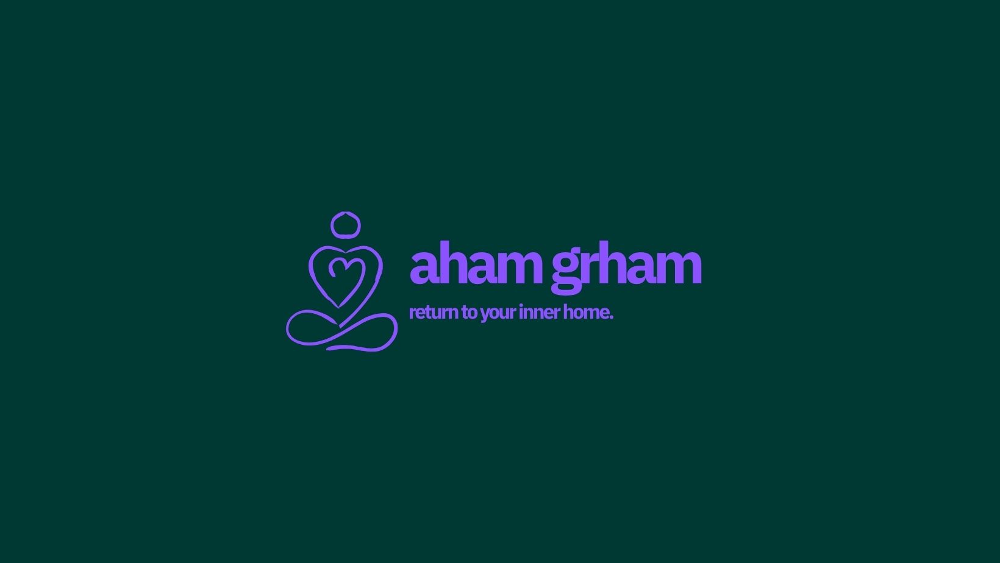
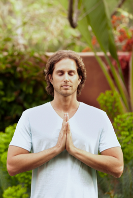
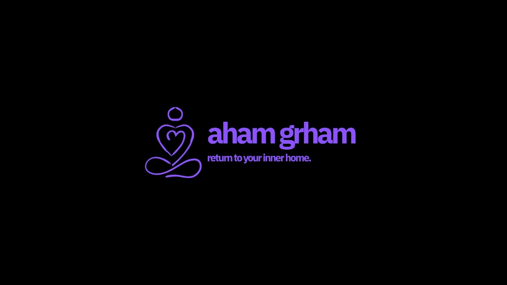

Deep Practice
The Silence Within
Explore the neurological benefits of sustained silence and internal resonance.
return to your inner Home
precision-engineered yoga pathways designed for clinical results and spiritual depth. experience the perfect balance of neurological synchronization and community movement.
our classes are designed for real life, with simple sequences that ease stiffness, improve posture, and help you feel more grounded from morning to night.
from beginner-friendly flows to restorative practice, we focus on alignment, breath awareness, and gentle progress that supports long-term wellness.
each program blends stretching, balance, and relaxation so you can release tension, move with confidence, and stay connected to your body.
Precision-engineered yoga pathways designed for clinical results and spiritual depth.


return to your inner home



Upcoming events, workshops, and retreat highlights from our growing community.

Explore the neurological benefits of sustained silence and internal resonance.

Clinical approaches to respiratory control and cellular oxygenation.


Synchronizing your physical flow with lunar cycles and cosmic rhythms.


The science of 432Hz harmonic patterns and auditory cellular reset.

Join world leaders in neuroscience and spirituality for a 5-day immersion.

Advanced protocols for trauma release through controlled physical movement.

Mastering the subtle energy systems of the Vedic tradition.

Optimization protocols for high-performance leadership teams.

How spatial design influences neurological state and spiritual clarity.

Voices from the Himalayas on the future of clinical yoga.

Subscribe to our monthly publication for research and wisdom.
Whether in the high Himalayas or the crisp air of the Alps, your journey to soulful clinical healing starts with a single step.